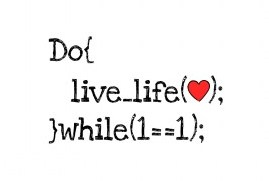

Заметки об оптимизации: О пользе Loop-invariant Code Motion
Это первая заметка из серии статей, посвященных введению в теорию оптимизации программ.
Приведенные ниже примеры кода написаны на гипотетическом языке программирования, который больше всего похож на C# и Java. Это сделано лишь для того, чтобы сделать публикуемый материал доступным для понимания широкому кругу читателей, без привязки к какому-то одному конкретному языку (и автоматически к фобиям его фанатов/антифанатов).
В первой части, мы начнем с рассмотрения так называемого Loop-invariant Code Motion (LICM), то есть как понятно из термина — рассмотрим правильность создания циклов.

Выполнение Loop-invariant Code Motion (LICM) вручную
Никогда не надейтесь на компилятор в плане LICM — он не такой умный, как вам кажется. Теоретическое доказательство того, что компилятор сумеет провести LICM для заданного цикла, часто бывает на порядок сложнее, чем доказательство возможности применения LICM для данного цикла.
Рассмотрим классический пример цикла, многочисленные вариации которого присутствуют почти в любом проекте:
void Foo(IBar bar) {
for (int i = 0; i < bar.Count(); i++) {
Baz(bar);
}
}
Чтобы компилятор сумел доказать, что в следующем цикле результат вычисления bar.Count() не зависит от текущей итерации и не имеет побочных эффектов, ему нужно:
Поэтому проще и эффективнее самому сделать работу за компилятор и вынести за пределы цикла все вычисления, которые не зависят от конкретной итерации цикла и не имеют побочных эффектов.
Для вышеприведенного случая типична следующая очевидная оптимизация:
void Foo(IBar bar) {
int c = bar.Count();
for (int i = 0; i < c; i++) {
Baz(bar);
}
}
Уже слышу недовольные голоса моих читателей —
«а что, если bar.Count() просто возвращает значение поля bar.count без каких-либо побочных эффектов? В этом случае вышеприведенная оптимизация нисколько не ускорит цикл».
Второй по распространенности пример неэффективного программирования — обращение к синглтонам внутри наиболее часто вызываемого цикла:
for (;;) {
FooSingleton.GetInstance().Bar();
}}
или, что почти то же самое:
void Foo() {
FooSingleton.GetInstance.Baz();
}
for (;;) {
Foo();
}
Самое интересное начинается, когда профилирование программ с такими циклами показывает, что узким местом является вызов FooSingleton.GetInstance(). Обычно его начинают оптимизировать с помощью печально известного метода Double-checked locking, хотя на самом деле нужно было всего лишь вручную произвести простейшую LICM-оптимизацию:
Foo foo = FooSingleton.GetInstance();
for (;;) {
foo.Bar();
}
или, для второго примера:
void Foo(Foo foo) {
foo.Baz();
}
Foo foo = FooSingleton.GetInstance();
for (;;) {
Foo(foo);
}
И, вуаля, FooSingleton.GetInstance() больше никогда не появляется в профилировщике.
Немного об double checked locking
DCL - это антипаттерн, который норовят использовать все, кто о нем впервые услышал, либо сам до него додумался. Он не работает почти во всех языках программирования, тем самым еще раз подтверждая вред преждевременной оптимизации. Если вам нужен быстрый доступ к синглтону из множества потоков, то кэшируйте указатель на синглтон, возвращаемый синхронизированной фабрикой в thread local storage. Смотрите очень наглядный пример "Fixing Double-Checked Locking using Thread Local Storage" здесь (там, правда, кэшируется не совсем указатель). Но делайте это только в том случае, если профилирование показывает, что доступ к синглтону - действительно узкое место, и другие способы оптимизации не помогают.
Заключение
В следующий раз, когда будете писать либо редактировать циклы, не поленитесь выполнить LICM вручную. Обычно это приводит не только к повышению производительности, но и к улучшению читабельности кода. Продолжение серии этих заметок можно увидеть здесь:
А поскольку впереди предстоит ещё целый длинный сериал заметок на эту тему, самое время уступить место злой самоиронии:
Похожие страницы: